第4回 データ解析¶
データの裏側に隠された「真実」をあぶり出すため「データ解析（データ分析）」を学習します
🎯 到達目標¶
「平均値の罠」を理解し、データに極端な値（外れ値）が含まれる場合に「中央値（メディアン）」を正しく選択・算出できる。
データのばらつき度合いを示す「標準偏差（Standard Deviation）」の直感的な意味を説明でき、Pandasで算出できる。
2つのグループの属性（例：性別 ✕ 購入商品）を掛け合わせた「クロス集計（
pd.crosstab）」や、店舗別のマトリクス表を作る「ピボットテーブル（pd.pivot_table）」が作成できる。2つのデータの関係性の強さを表す「相関係数」を理解し、Pandasで相関行列を計算して正しく解釈できる。
データ分析最大のタブーである「相関関係と因果関係の混同（疑似相関）」を見破り、第三の要因を疑う「データリテラシー（クリティカルシンキング）」を学ぶ。
位置情報や属性の背景にアプローチする「定性的評価」と、統計量で裏付ける「定量的評価」の2つのアプローチを組み合わせたデータ評価が理解している。
練習問題のGoogle Colab起動¶

上記の「Open In Colab」をクリックして、Google Colabを起動させてください
[ファイル] → [ドライブにコピーを保存] を選択して、Googleドライブにコピーを保存してください
保存が成功すると，Googleドライブの「マイドライブ」 →「Colab Notebooks」にコピーしたファイルが保存されます。
GoogleドライブにコピーしたGoogle ColabのNotebooksを開いてください
開いたGoogle ColabのNotebooksで作業をしてください
記述統計とは¶
記述統計とは、手元にあるデータの特徴や傾向を分かりやすく整理し、要約するための統計手法です。
記述統計の主な目的データの可視化:¶
表やグラフ（ヒストグラムや箱ひげ図など）を使って、データの全体像を目で見て分かりやすくする。
数値による要約: 代表値や散らばりの指標を用いて、データを少数の数値で表す。
主な指標（記述統計量）¶
代表値（中心の位置）:
平均値: すべてのデータの値を足して、データの数で割った値
中央値: データを大きさ順に並べたときに真ん中に来る値
最頻値(さいひんち): データの中で最も多く現れる値
散らばりの指標（バラツキ）:
分散: 平均値からのズレの2乗を平均した値
標準偏差: 分散の正の平方根で、平均からどれくらいデータが散らばっているかを示す
最小値・最大値: データの範囲を把握するための両端の値
平均客単価の罠¶
あるカフェの「商品の購入金額」は、普段は 300円〜500円 の範囲でした。 しかし、そのうちの1人が、お店に壁に飾ってあった2億円の絵画をキャッシュで購入していきました。
この日の客単価データは以下のようになります。
[350円, 400円, 380円, 450円, 300円, 420円, 390円, 360円, 410円, 200,000,000円（絵画）]
このデータをPandasに入力し、「平均値（Mean）」と「中央値（Median）」を計算して比較してみましょう。
import pandas as pd
# 10人のお客様の購入金額データ
sales_data = pd.Series([350, 400, 380, 450, 300, 420, 390, 360, 410, 200000000])
# 平均値（Mean）の計算
mean_val = sales_data.mean()
# 中央値（Median）の計算
median_val = sales_data.median()
print(f"平均客単価: {mean_val:,.1f} 円 (全員が2000万円も使った？)")
print(f"中央客単価: {median_val:,.1f} 円 (普段通り約400円)")
平均値（
.mean()）「全員の合計金額を人数で割る」という計算をするため、1件でも異常な値（外れ値：Outlier）が混ざると、強烈にその数値に引っ張られてしまい、実態を全く表さなくなります。
中央値（
.median()）データを小さい順に並べ替えたときに「ちょうど真ん中の順位（50%の位置）にくる値」です。どれほど極端な外れ値が混ざっていても、順位自体は1つしかズレないため、外れ値の影響を受けずに、「普段の姿」を映し出すことができます。
⚠️ データリテラシー: ニュースで「日本の平均年収は450万円です」と言われた際、多くの人が「自分は平均以下だ…」と思います。しかし、実際は一部の超高所得層（大企業の社長やスポーツ選手など）が平均値を強烈に引き上げています。実態に近い年収（日本人のちょうど真ん中の人の年収＝中央値）を調べると、約360万円〜380万円付近になり、平均値より約100万円近く低くなります。データを見るときは、常に「平均値の罠」を疑い、中央値も同時に確認する癖をつけましょう！
データのばらつきを測る「標準偏差（Standard Deviation）」¶
平均値や中央値といった「真ん中の値」が分かったら、次に知りたいのは「データはどのくらい散らばっているのか？（個人差が大きいのか、全員同じくらいなのか）」という情報です。
ここに、1日の総売上高がどちらも「ピッタリ30万円」である2つの店舗があります。
A店（安定型）：来店するお客様全員が、ほぼ均一に「300円〜400円」のコーヒーとパンを頼む。
B店（波乱万丈型）：100円のガム1個だけを買う極端な顧客もいれば、一度に2万円分のギフト用コーヒー豆をまとめ買いする顧客もいる。
この2つの店の「個人差（ばらつき）」を数値化したものが「標準偏差（Standard Deviation）」です。 数式は難しそうに見えますが、直感的な意味は極めてシンプルです。
💡 標準偏差の直感的な定義： 「全員のデータが、平均値から平均して『どれくらいの距離（金額）』離れているかを表す指標」
【標準偏差（ばらつき）のビジュアル図解】
【 A店 (標準偏差が小さい) 】 【 B店 (標準偏差が大きい) 】
| ●●● | ●
| ●●●●● | ● ● ●
─────┼──────●───────▶ ────┼──────●───────▶
| (平均350円) | (平均350円)
(全員が平均のすぐ近くにいる) (平均から遠く離れた人が多い)
Pandasでこの「ばらつき」を計算してみましょう。
# A店とB店の顧客ごとの購入額データ（各10人）
shop_A = pd.Series([350, 360, 340, 350, 370, 330, 350, 360, 340, 350]) # 平均350円
shop_B = pd.Series([100, 500, 50, 800, 150, 100, 350, 50, 400, 1000]) # 平均350円
print(f"A店の平均値: {shop_A.mean():.1f} 円 / 標準偏差(std): {shop_A.std():.1f}")
print(f"B店の平均値: {shop_B.mean():.1f} 円 / 標準偏差(std): {shop_B.std():.1f}")
A店の標準偏差は 11.5 です。これは「顧客全員の金額が、平均350円からプラスマイナス11.5円程度の非常に狭い範囲にギュッと集まっている（ばらつきが極めて小さい）」ことを示しています。
B店の標準偏差は 333.3 です。これは「顧客全員の金額が、平均350円から平均して約333円も遠く離れた、非常に激しいバラバラな状態にある（ばらつきが極めて大きい）」ことを意味します。
ビジネスにおいて、標準偏差を知ることは「仕入れや在庫の安定性」を予測する上で、平均値と同じくらい極めて重要な意味を持ちます。
クロス集計とピボットテーブル：多角的なデータ分析¶
データ全体の平均やばらつきがつかめたら、次は「データをグループ（属性）ごとに切り分けて比較する」ステップに進みます。 これを行うのが「クロス集計」と「ピボットテーブル」です。
属性ごとの割合をあぶり出す「クロス集計（pd.crosstab）」¶
例えば、あなたがカフェの購入データを持っており、「男性と女性で、注文する商品カテゴリ（ドリンク、デザート、フード）に違いはあるか？」を調べたいとします。
Pandasの pd.crosstab(行に並べる列, 列に並べる列) を使うと、掛け合わせの度数（人数）を集計する「クロス集計表」が作れます。
# 会員顧客データ（15人分のダミー）
df_members = pd.DataFrame({
"性別": ["女性", "男性", "女性", "女性", "男性", "女性", "男性", "女性", "女性", "男性", "女性", "男性", "女性", "女性", "男性"],
"注文カテゴリ": ["デザート", "ドリンク", "デザート", "フード", "ドリンク", "デザート", "フード", "デザート", "ドリンク", "デザート", "フード", "ドリンク", "デザート", "フード", "ドリンク"]
})
# 性別と注文カテゴリのクロス集計表（度数＝人数）を作成します
cross_table = pd.crosstab(df_members["性別"], df_members["注文カテゴリ"])
print("性別 ✕ 注文カテゴリ のクロス集計（人数）")
display(cross_table)
# 人数ではなく、横一行を100%とした「比率（割合）」で表示したい場合は normalize="index" をつけます
cross_ratio = pd.crosstab(df_members["性別"], df_members["注文カテゴリ"], normalize="index")
print("\n割合（％）で表示したクロス集計（女性の何％がデザートを頼むか？）")
display(cross_ratio.style.format("{:.1%}")) # パーセント表示に綺麗に整える
複数店舗✕商品カテゴリの売上を一発集計「ピボットテーブル（pd.pivot_table）」¶
クロス集計は「人数（度数）」を数えるのに適していますが、「金額の合計や平均」をマトリクス（縦横の表）で集計したい場合は、「ピボットテーブル（pd.pivot_table）」 を使います。
「どの店舗（縦軸）が、どのメニューカテゴリ（横軸）で、いくら（値）売り上げたか」を一撃でマトリクス表に集計してみます
【ピボットテーブルのイメージ】
[ 生の売上データ ] [ ピボットテーブル (pd.pivot_table) ]
江古田店 | ドリンク | 450円 ドリンク デザート フード
白山店 | フード | 800円 江古田店 900円 600円 750円
江古田店 | ドリンク | 450円 ──▶ 白山店 500円 550円 800円
白山店 | デザート | 550円
江古田店 | デザート | 600円
# カフェの複数店舗における詳細な売上履歴
df_shop_sales = pd.DataFrame({
"店舗名": ["江古田店", "江古田店", "白山店", "白山店", "江古田店", "白山店", "江古田店", "白山店"],
"カテゴリ": ["ドリンク", "デザート", "ドリンク", "フード", "フード", "デザート", "ドリンク", "フード"],
"売上金額": [450, 600, 500, 800, 750, 550, 450, 900]
})
# ピボットテーブルの作成
# values: 集計する数値の列, index: 縦軸(行), columns: 横軸(列), aggfunc: 集計方法（合計=sum, 平均=mean）
pivot_result = pd.pivot_table(
df_shop_sales,
values="売上金額",
index="店舗名",
columns="カテゴリ",
aggfunc="sum",
fill_value=0 # 売上が存在しない箇所（NaN）を0で埋める
)
print("店舗別・カテゴリ別の総売上ピボットテーブル")
display(pivot_result)
生のデータから、pd.pivot_table をわずか1行実行するだけで、各店舗ごとの強み・弱みがビジュアルとして一瞬で把握できる綺麗なマトリクス表にまとめることができます。
相関分析：2つの変数の関係性を数値化する¶
データ分析の最大の醍醐味の一つが、「2つのデータ（変数）の間に、どのような関係性（連動する波）があるか？」を調べることです。 これを「相関分析（Correlation Analysis）」と呼びます。
相関係数 の読み解き方¶
2つのデータがどれくらい連動して動いているかを、-1.0 〜 +1.0 の範囲の数値で表したものを「相関係数（Correlation Coefficient: \(r\)）」と呼びます。
【相関係数の波のイメージ】
【 ① 正の相関 (r が +1 に近い) 】 【 ② 負の相関 (r が -1 に近い) 】
Y (かき氷の売上) Y (ホットコーヒーの売上)
│ ● │ ●
│ ● ● │ ● ●
│ ● │ ● ●
└──────────────▶ X (最高気温) └──────────────▶ X (最高気温)
「気温が上がると、売上も上がる」 「気温が上がると、売上は下がる」
【 ③ 無相関 (r が 0 に近い) 】
Y (お客様の支払金額)
│ ● ●
│ ● ●
│ ● ●
└──────────────▶ X (お客様の「生まれ月」)
「生まれ月と、お会計金額には関係がない（バラバラ）」
強さの目安：
0.7 〜 1.0：非常に強い正の相関（一方が増えれば、もう一方も確実に増える）
0.4 〜 0.7：中程度の正の相関（連動する傾向がある）
-0.2 〜 0.2：ほぼ無相関（お互いに関係が全く見られない）
-0.4 〜 -0.7：中程度の負の相関（一方が増えると、もう一方は減る傾向がある）
-0.7 〜 -1.0：非常に強い負の相関（一方が増えれば、もう一方は確実に減る）
Pandasのデータフレームに対して .corr(numeric_only=True) メソッドを適用すると、すべての数値列同士の相関係数を一瞬でマトリクス表（相関行列）にして計算してくれます。
# カフェの日ごとのデータ（最高気温、客数、アイスコーヒー売上、ホットコーヒー売上、生まれ月（無関係））
df_weather_sales = pd.DataFrame({
"最高気温": [15, 20, 25, 30, 35, 12, 18, 22, 28, 32],
"客数": [80, 100, 120, 140, 160, 75, 95, 110, 130, 150],
"アイス売上": [10, 25, 50, 90, 150, 5, 20, 40, 80, 120],
"ホット売上": [100, 80, 50, 20, 5, 120, 90, 60, 30, 10],
"スタッフ生まれ月": [5, 12, 1, 8, 3, 11, 2, 7, 9, 6] # 売上とは何の関係もない
})
# 相関行列の作成
correlation_matrix = df_weather_sales.corr(numeric_only=True)
print("すべての数値データの組み合わせの相関行列")
display(correlation_matrix.style.background_gradient(cmap="coolwarm", vmin=-1, vmax=1)) # 関係性を色の濃淡で美しく見せる
「最高気温」と「アイス売上」の相関係数は 0.95（非常に強い正の相関）
「最高気温」と「ホット売上」の相関係数は -0.97（非常に強い負の相関）
「最高気温」と「スタッフの生まれ月」は 0.06（ほぼ完全な無相関＝関係なし）
この相関係数を調べることで、「どのデータを参考にすれば、未来の売上予測ができるか」を科学的に見極めることができます。
⚠️ データ分析者最大のタブー：「相関関係」と「因果関係」は違う！¶
データ分析の世界において、よく犯す、かつ最も致命的な間違いが「相関関係（Correlation）」と「因果関係（Causation）」の混同（擬似相関）です。
ある新聞に、以下のような主張の記事が載っていたとしましょう。
「独自に日本全国の地域データを収集して分析した結果、各地域の『交番の数』と『犯罪発生件数』の間には、相関係数 (r = 0.85) という非常に強い正の相関関係があることが分かった。これは大変な事実である。街の犯罪を減らすためには、今すぐ街中にある交番をすべて撤去して無くしてしまえばよい。」
この主張のロジックは、正しいでしょうか？それともおかしいでしょうか？
【間違いの図解（擬似相関）】
【 間違った解釈 (直接の因果だと勘違い) 】
[ 🏛️ 交番の数が多い ] ────(原因 ➡ 結果！？)───▶ [ 🚨 犯罪件数が多い ] (交番を壊そう！)
▲
│
【 正しい解釈 (裏に潜む「第三の要因：人口」が本当の原因) 】 │ (原因)
┌─────────────────── [ 👥 地域の人口が多い (都会) ] ──────┘
│
▼ (原因)
[ 🏛️ 交番をたくさん建てる ]
この記事の著者は、データが連動している（相関関係がある）からといって、勝手に「交番があるから、犯罪が起きる（因果関係）」と決めつけてしまっています。
しかし、実際には裏に潜んでいる本当の原因（第三の要因）として「その地域の人口（あるいは都会度）」が存在します。
人口が多い地域（都会）ほど、当然たくさんの交番が設置されますし、同時に人が多いため犯罪件数も多くなります。人口が少ない地域は交番も犯罪も少なくなります。
交番をすべて撤去したところで地域の人口が減るわけではないため、犯罪は減るどころか、警察官がいなくなることで治安が劇的に悪化し、犯罪が爆発的に増加してしまいます。
🌟 データ分析者として最も大事なマインドセット： 「AとBの数字が連動して動いている（相関がある）」からといって、安易に「Aが原因で、Bが結果だ（因果関係）」と判断してはなりません。常に「その裏に、全体を操っている『第三の要因（隠れた変数）』が潜んでいないか？」と、データに騙されずにクリティカルに疑いを持つことこそがデータサイエンスの真の価値です。
データ評価¶
データの加工と同時にデータの評価は重要である
加工するデータや分析するデータ、機械学習モデルに投入するデータの中身を把握することなく先に進むことはできない
表形式データの定量的および定性的なチェック方法と、外れ値や欠損値、値の重複への対処方法を解説していきます
データの評価のイメージ
大まかなチェック 問題点の把握と対処
定量（要約統計量） ➡ データの分布
定性（可視化） 外れ値、異常値
欠陥値
値の重複
定量的評価と定性的評価¶
データ分析から実社会に役立つ知見（意思決定）を導き出すとき、「データ評価（Data Evaluation）」とをします。 この評価には、2つのアプローチが存在します。
【 📊 データ評価の2大アプローチ 】
├── 1. 定量的評価 (Quantitative): 「数値」で測る。客観的、全体像の把握。
└── 2. 定性的評価 (Qualitative): 「背景・文脈」を探る。主観、理由・動機の探索。
定量的評価（Quantitative Evaluation）¶
特徴
すべてのデータを「数値（数量）」に変換し、統計量やグラフを用いて客観的に評価する。
メリット
主観を排除し、誰が見ても同じ結論に至る。大規模なデータの「全体像」を捉える。
よく使う道具
平均値、中央値、標準偏差、相関係数、売上高、パーセント比率など。
限界
なぜその数値になったのか」という、人間の感情や偶発的な現場のトラブルなどの「裏の理由」を説明することはできない。
定性的評価（Qualitative Evaluation）¶
特徴
数値にできない「言語、状況、背景、感情、歴史的コンテキスト」に注目し、深く評価する。
メリット
「なぜそうなったのか」という根本的な原因やプロセス、データの収集過程における現場の制約などを解き明かす。
よく使う道具
インタビュー、行動観察、歴史的背景の調査、エラーや欠損データの発生原因の推測などをする。
限界
客観的な比較や、大規模なデータ全体に対して「本当にそれが代表的な意見か」を一般化することが難しく、評価者の主観が入りやすい。
実データでのデータ評価：「南極パーマー半島のペンギン調査データ」¶
「定量的評価」と「定性的評価」を、南極パーマー半島に生息するペンギンの体格などを2007年から2009年にかけて調査したデータ「ペンギンの体格調査データ（Palmer Penguins）」を使います。 このデータは、アデリー（Adelie）、ヒゲ（Chinstrap）、ジェンツー（Gentoo）という3種類のペンギンの体格を測定した、世界中のデータサイエンス教材で有名なデータです。
「南極のペンギンに関するデータ」の出典／データソース／ライセンス
原出典
Gorman KB, Williams TD, Fraser WR (2014). Ecological Sexual Dimorphism and Environmental Variability within a Community of Antarctic Penguins（Genus Pygoscelis). PLoS ONE 9(3):e90081.
https://doi.org/10.1371/journal.pone.0090081
データソース
Adélie penguins: Palmer Station Antarctica LTER and K. Gorman. 2020. Structural size measurements and isotopic signatures of foraging among adult male and female Adélie penguins (Pygoscelis adeliae) nesting along the Palmer Archipelago near Palmer Station, 2007-2009 ver 5. Environmental Data Initiative.
https://doi.org/10.6073/pasta/98b16d7d563f265cb52372c8ca99e60f
Gentoo penguins: Palmer Station Antarctica LTER and K. Gorman. 2020. Structural size measurements and isotopic signatures of foraging among adult male and female gentoo penguins (Pygoscelis papua) nesting along the Palmer Archipelago near Palmer Station, 2007-2009 ver 7. Environmental Data Initiative.
https://doi.org/10.6073/pasta/9fc8f9b5a2fa28bdca96516649b6599b
Chinstrap penguins: Palmer Station Antarctica LTER and K. Gorman. 2020. Structural size measurements and isotopic signatures of foraging among adult male and female Chinstrap penguins (Pygoscelis antarcticus) nesting along the Palmer Archipelago near Palmer Station, 2007-2009 ver 8. Environmental Data Initiative.
https://doi.org/10.6073/pasta/ce9b4713bb8c065a8fcfd7f50bf30dde
ライセンス
CC-0（Palmer Station LTER Data PolicyおよびLTER Data Access Policy for Type I dataに基づく）
ペンギンの種類
Adelie penguin（Pygoscelis adeliae）：アデリーペンギン
Gentoo penguin（Pygoscelis papua) ：ジェンツーペンギン
Chinstrap penguin（Pygoscelis antarctica)：ヒゲペンギン
※ このデータが南極のパーマー基地周辺で収集されたことにちなんで、パーマーペンギン（Palmer Penguins）のデータと呼ばれることがある。ただし、そのようなペンギンの種は存在しない。
利用するペンギンデータ
ペンギンデータの内容
列名 |
説明 |
|---|---|
species |
ペンギンの種類('Adelie', 'Chinstrap', 'Gentoo') |
island |
ペンギンが生息する島の名前('Torgersen', 'Biscoe', 'Dream') |
bill_length_mm |
ペンギンのくちばしの長さ(mm) |
bill_depth_mm |
ペンギンのくちばしの奥行き(mm) |
flipper_length_mm |
ペンギンのヒレの長さ(mm) |
body_mass_g |
ペンギンの体重(g) |
sex |
ペンギンの性別('Male', 'Female') |
year |
データが収集された年 |
ペンギンデータ読み込み
import pandas as pd
url = "https://raw.githubusercontent.com/mwaskom/seaborn-data/master/penguins.csv"
df_penguins = pd.read_csv(url)
display(df_penguins.head())
index |
species |
island |
bill_length_mm |
bill_depth_mm |
flipper_length_mm |
body_mass_g |
sex |
|---|---|---|---|---|---|---|---|
0 |
Adelie |
Torgersen |
39.1 |
18.7 |
181.0 |
3750.0 |
MALE |
1 |
Adelie |
Torgersen |
39.5 |
17.4 |
186.0 |
3800.0 |
FEMALE |
2 |
Adelie |
Torgersen |
40.3 |
18.0 |
195.0 |
3250.0 |
FEMALE |
3 |
Adelie |
Torgersen |
NaN |
NaN |
NaN |
NaN |
NaN |
4 |
Adelie |
Torgersen |
36.7 |
19.3 |
193.0 |
3450.0 |
FEMALE |
行数と列数を表示
df_penguins.shape
(344, 7)
先頭を表示
df_penguins.head()
index |
species |
island |
bill_length_mm |
bill_depth_mm |
flipper_length_mm |
body_mass_g |
sex |
|---|---|---|---|---|---|---|---|
0 |
Adelie |
Torgersen |
39.1 |
18.7 |
181.0 |
3750.0 |
MALE |
1 |
Adelie |
Torgersen |
39.5 |
17.4 |
186.0 |
3800.0 |
FEMALE |
2 |
Adelie |
Torgersen |
40.3 |
18.0 |
195.0 |
3250.0 |
FEMALE |
3 |
Adelie |
Torgersen |
NaN |
NaN |
NaN |
NaN |
NaN |
4 |
Adelie |
Torgersen |
36.7 |
19.3 |
193.0 |
3450.0 |
FEMALE |
最後を表示
df_penguins.tail()
index |
species |
island |
bill_length_mm |
bill_depth_mm |
flipper_length_mm |
body_mass_g |
sex |
|---|---|---|---|---|---|---|---|
339 |
Gentoo |
Biscoe |
NaN |
NaN |
NaN |
NaN |
NaN |
340 |
Gentoo |
Biscoe |
46.8 |
14.3 |
215.0 |
4850.0 |
FEMALE |
341 |
Gentoo |
Biscoe |
50.4 |
15.7 |
222.0 |
5750.0 |
MALE |
342 |
Gentoo |
Biscoe |
45.2 |
14.8 |
212.0 |
5200.0 |
FEMALE |
343 |
Gentoo |
Biscoe |
49.9 |
16.1 |
213.0 |
5400.0 |
MALE |
データのタイプを表示
df_penguins.dtypes
species |
object |
island |
object |
bill_length_mm |
float64 |
bill_depth_mm |
float64 |
flipper_length_mm |
float64 |
body_mass_g |
float64 |
sex |
object |
dtype: object |
読み込んだデータの保存
df_penguins.to_parquet("penguins.parquet")
定量的評価（統計量）¶
要約統計量の確認
DataFrameやSeriesからdescribe()メソッドを使うと一度に計算できる
DataFrameでは、各列についての要約統計量を計算する
主な要約統計量
対応するpandasのメソッド |
種類 |
|---|---|
describe() |
各列の要約統計量をまとめて計算 |
count() |
データの総数（欠損値を除く） |
max() |
最大値 |
min() |
最小値 |
mean() |
平均値 |
median() |
中央値. データを小さい順に並べたときに真ん中に位置する値 |
std() |
標準偏差 |
nunique() |
重複を除いたユニークな要素の数（種類数） |
mode() |
データの中で最も多く出現する値 (最頻値) |
import pandas as pd
df_penguins = pd.read_parquet("penguins.parquet")
df_penguins.describe()
index |
bill_length_mm |
bill_depth_mm |
flipper_length_mm |
body_mass_g |
|---|---|---|---|---|
count |
342.0 |
342.0 |
342.0 |
342.0 |
mean |
43.9219298245614 |
17.151169590643278 |
200.91520467836258 |
4201.754385964912 |
std |
5.459583713926532 |
1.9747931568167816 |
14.061713679356894 |
801.9545356980954 |
min |
32.1 |
13.1 |
172.0 |
2700.0 |
25% |
39.225 |
15.6 |
190.0 |
3550.0 |
50% |
44.45 |
17.3 |
197.0 |
4050.0 |
75% |
48.5 |
18.7 |
213.0 |
4750.0 |
max |
59.6 |
21.5 |
231.0 |
6300.0 |
主な統計量（数値データの場合）
count: データの総数（欠損値を除く）
mean: 平均値
std: 標準偏差
min: 最小値
25%: 第1四分位数（25パーセンタイル）
50%: 中央値（50パーセンタイル）
75%: 第3四分位数（75パーセンタイル）
max: 最大値
定性的評価（可視化）¶
定量的な評価だけでは把握しにくい分布の形状や値の変化、複数の変数の関係などを可視化する
グラフを描くことでデータの内容を視覚的に把握することができる
データ可視化のためのライブラリ¶
Python環境でデータを可視化するために使われる主なライブラリとして、pandas、Matplotlib、Plotlyなどがある
pandas.DataFrameのplot()¶
pandas.DataFrameのplot()で、ペンギンのくちばしの長さbill_length_mmとひれの長さflipper_length_mmの関係を散布図に描画する
pandasの主な描画機能
種類 |
引数 kindの値 |
|---|---|
散布図 |
"scatter" |
折れ線グラフ |
"line" (デフォルト) |
棒グラフ |
"bar" |
ヒストグラム |
"hist" |
箱ひげ図 |
"box" |
ペンギンのくちばしの長さ（横軸）とひれの長さ（縦軸）の散布図
import pandas as pd
df_penguins = pd.read_parquet("penguins.parquet")
# ペンギンのくちばしの長さ（横軸）とひれの長さ（縦軸）の散布図
df_penguins.plot(
x="bill_length_mm",
y="flipper_length_mm",
kind="scatter",
)
{kind=link}
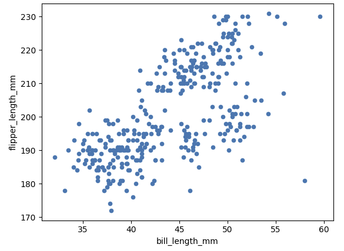
Matplotlibを使ったグラフ描画¶
Matplotlibは、Python環境におけるデータ可視化の代表的なライブラリ
Matplotlibを使ってDataFrameの値を描画するには、pyplotモジュールを使うことが一般的
Axesインスタンスからグラフの種類に応じたメソッドを呼び出します。
Matplotlibの主な描画メソッド
種類 |
メソッド |
|---|---|
散布図 |
scatter() |
折れ線グラフ |
plot() |
棒グラフ |
bar() |
ヒストグラム |
hist() |
箱ひげ図 |
boxplot() |
ペンギンのくちばしの長さ（横軸）とひれの長さ（縦軸）の散布図
import pandas as pd
import matplotlib.pyplot as plt
df_penguins = pd.read_parquet("penguins.parquet")
# 準備（subplotsコンストラクターを呼び出してAxesクラスのインスタンスを生成）
_, ax = plt.subplots()
# くちばしの長さ（横軸）とひれの長さ（縦軸）の散布図
ax.scatter(
x=df_penguins.loc[:, "bill_length_mm"],
y=df_penguins.loc[:, "flipper_length_mm"],
)
plt.show()
{kind=link}
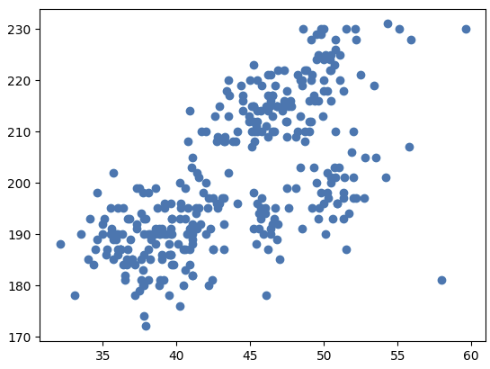
Plotlyを使ったグラフ描画¶
Plotlyは、簡潔なコードでインタラクティブなデータ可視化を実現できるライブラリ
例えば、Plotly Expressというインタフェースを通してグラフの種類に応じた関数を使う
Plotlyの主な描画関数
種類 |
関数 |
|---|---|
散布図 |
scatter() |
折れ線グラフ |
line() |
棒グラフ |
bar() |
ヒストグラム |
histogram() |
箱ひげ図 |
box() |
import pandas as pd
import plotly.express as px
df_penguins = pd.read_parquet("penguins.parquet")
# くちばしの長さ（横軸）とひれの長さ（縦軸）の散布図
px.scatter(
df_penguins,
x="bill_length_mm",
y="flipper_length_mm",
)
{kind=link}
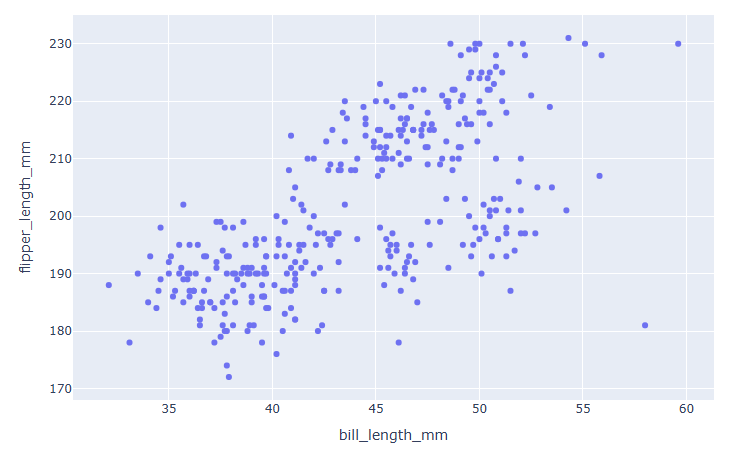
グラフの種類¶
データを可視化するは代表的なグラフは下記となる。
散布図： 2つの数値型の列どうしの関係を把握するために使う
折れ線グラフ: どのように変化するかを把握するために使う
棒グラフ: どのように異なるかを比較するために使う
ヒストグラム: 1つの数値の列の値の度数分布を棒グラフとして表示する
箱ひげ図: ヒストグラムと同様に1つの数値列の値の分布を分位点について表したもの
散布図¶
散布図は、2つの数値型の列どうしの関係を把握するために使う
くちばしの長さ（横軸）とひれの長さ（縦軸）の散布図
px.scatter(
df_penguins,
x="bill_length_mm",
y="flipper_length_mm",
)
{kind=link}
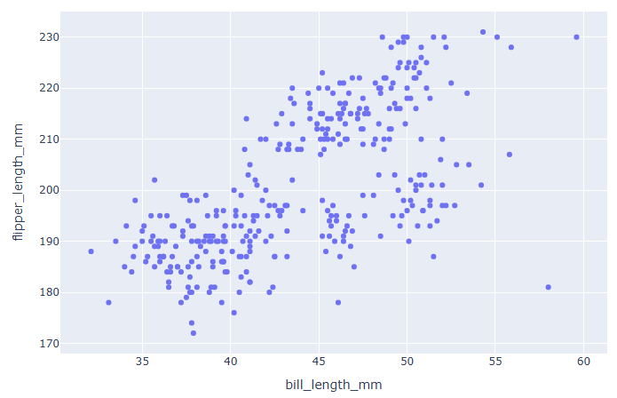
px.scatter(
df_penguins,
x="bill_length_mm",
y="flipper_length_mm",
color="species",
color_discrete_sequence=px.colors.qualitative.Dark2,
symbol="species",
)
{kind=link}
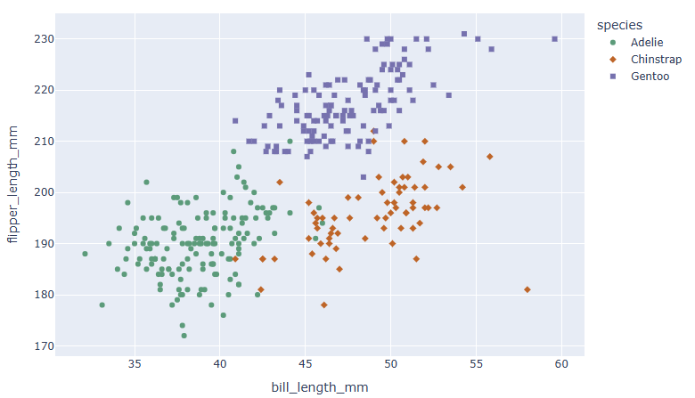
折れ線グラフ¶
ペンギンの個体番号順に body_mass_g を並べることで、折れ線グラフでペンギンの体重(g)がどのように変化するかを把握する
# 必要なデータだけ残す
df_penguins = df_penguins.dropna(subset=["body_mass_g", "species"])
# 種類ごとに個体番号を振る
# cumcount() は、グループごとに「何番目のデータか」を数える pandas の関数
df_penguins["individual"] = df_penguins.groupby("species").cumcount() + 1
# 折れ線グラフ
fig = px.line(
df_penguins,
x="individual",
y="body_mass_g",
color="species",
markers=True
)
fig.show()
{kind=link}
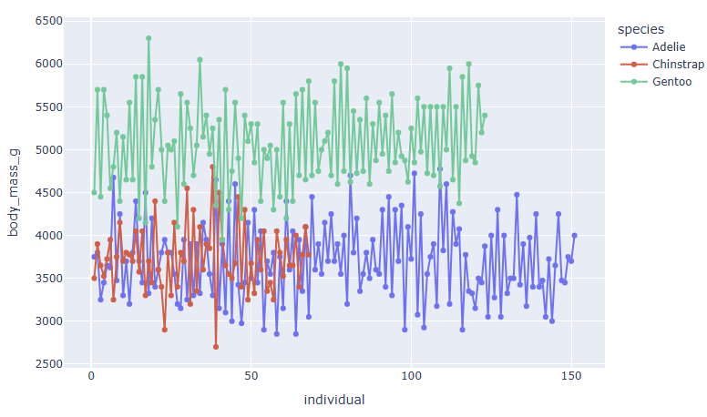
棒グラフ¶
棒グラフは、1つの数値型の列（縦軸）の値がもう1つのカテゴリー値の列（横軸）の値に応じて、どのように異なるかを比較するために使う。 原則として、縦軸の最小値は0にする
# 平均体重の計算
df_avg_weight_island = df_penguins.groupby(
["species", "island"], as_index=False
)["body_mass_g"].mean()
# 棒グラフの描画
px.bar(
df_avg_weight_island,
x="species",
y="body_mass_g",
color="island",
color_discrete_sequence=px.colors.qualitative.Dark2,
pattern_shape="island",
barmode="group",
)
{kind=link}
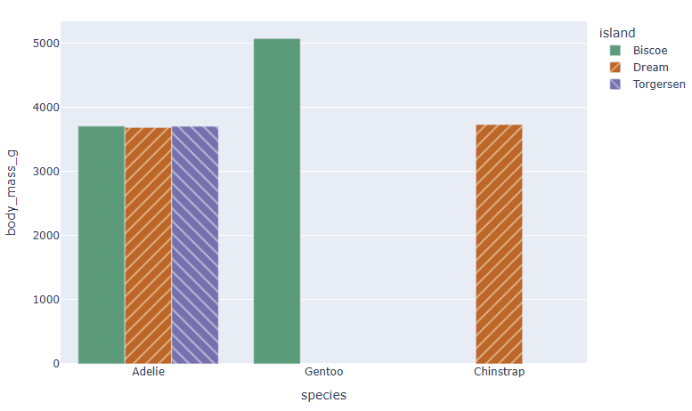
ヒストグラム¶
ヒストグラムは、1つの数値の列の値の度数分布を棒グラフとして表したもの
px.histogram(
df_penguins,
x="body_mass_g",
color="species",
color_discrete_sequence=px.colors.qualitative.Dark2,
pattern_shape="species",
opacity=0.7,
barmode="overlay",
)
{kind=link}
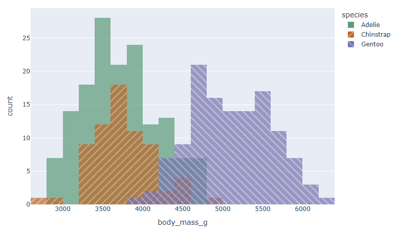
種ごとのヒストグラムを横に並べる
import re
# 種ごとのヒストグラムを横に並べる
fig_col = px.histogram(
df_penguins,
x="body_mass_g",
facet_col="species",
)
# species=」に続く任意の文字列にマッチ
RE_TITLE = re.compile(r"(?<=species=).+")
fig_col.for_each_annotation(
lambda a: a.update(text=re.search(RE_TITLE, a.text)[0])
)
fig_col.show()
{kind=link}
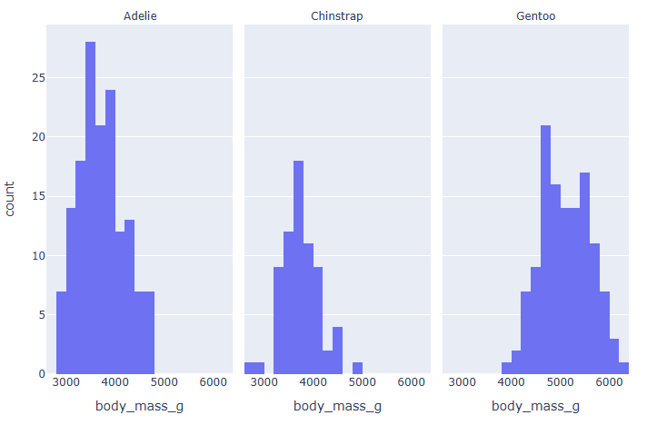
箱ひげ図¶
箱ひげ図は、ヒストグラムと同様に1つの数値列の値の分布を分位点について表したもの。
ヒストグラムが分布の詳細（階級ごとの度数）を表すのに対し、箱ひげ図は第1四分位点（25%点）、中央値（第2四分位点、50%点）、第3四分位点（75%点）などを模式的に表す
px.box(df, x="species", y="body_mass_g")
{kind=link}
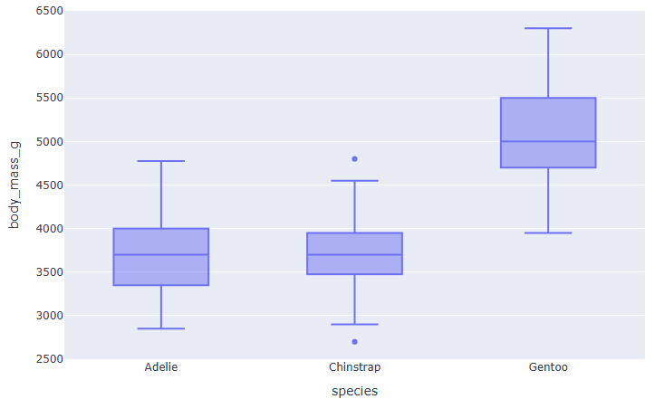
外れ値、異常値¶
外れ値、異常値¶
データの外れ値や異常値を、統計的、視覚的に把握する方法と対処方法について学習する
外れ値がデータ分析や機械学習モデル構築に影響を及ぼす要因をチェックするために、不可欠なステップ
外れ値とは、データ全体の分布から見て、ほかの値から大きく外れた値のこと
一方、異常値とは、データの測定時や記録時のエラーによって発生した特異な値のこと
ただし、どちらも、ほかの値より離れた範囲に存在することが多いため、ここではまとめて「外れ値」と呼ぶ
外れ値の確認¶
箱ひげ図やヒストグラムを描画することで定性的に外れ値の存在を把握できる
定量的に確認するには次の方法がある
分位点
正規分布と2σ範囲
σ(シグマ)は標準偏差を表す記号
統計ではよく使われる記号
σ（シグマ） → 標準偏差
μ（ミュー） → 平均値
例えば、
平均 ± 2σ（シグマ）
なら、「平均から標準偏差2個分の範囲」という意味
箱ひげ図による外れ値の確認¶
箱ひげ図はその名前のとおり、「箱」と「ひげ」（箱から出る線）でデータの分布を簡単に表現した図
箱は、下記からなる
第1四分位点（25％点）
中央値（第2四分位点、50％点）、
第3四分位点（75％点）
ひげの長さは、よく使われる指標で、Plotlyやpandas、Matplotlibの箱ひげ図では箱の長さの最大1.5倍である
箱ひげ図では、ひげの外側にある値を外れ値とみなす
次の分位点による外れ値の確認で解説するquantile()メソッドを使って第1四分位点と第3四分位点の値を求めると、箱ひげ図のひげの長さが計算できる
箱ひげ図による外れ値の確認
import pandas as pd
import plotly.express as px
df_penguins = pd.read_parquet("penguins.parquet")
px.box(df_penguins, x="species", y="body_mass_g")
{kind=link}
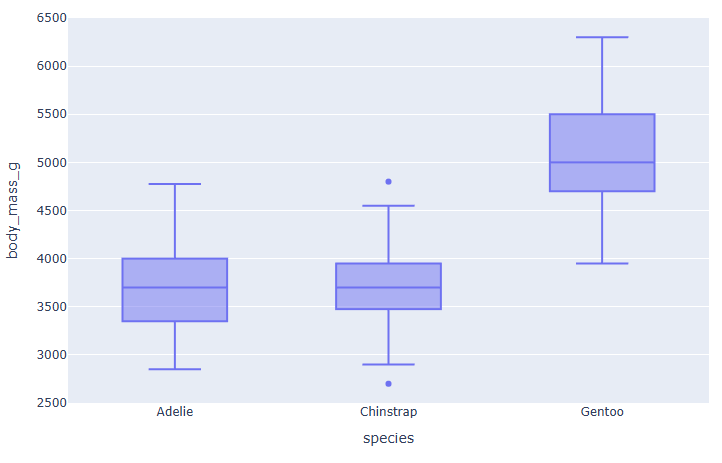
分位点による外れ値の確認¶
外れ値を定量的に見つける代表的な手段として、分位点（％点）がある
分位点とは、データのサンプルサイズを100としたときに小さいほうから数えて何番目に当たるかを表したもの
最小値が0％点、中央値が50％点、最大値が100％点となる
100%を4等分した25％点を第1四分位点、50％点を第2四分位点、75％点を第3四分位点と呼ぶ
pandasのSeriesはquantile()メソッドを使って分位点の値を計算できる。計算したい分位点を0から1の範囲の値としてリストで第1引数qに渡す
例として、ペンギンの種ごとに、体重の0、1、5、95、99、100の各％点を計算する
ここではデフォルトの線形補間を使い、引数interpolationは指定しない
df_penguins.groupby("species")["body_mass_g"].quantile(
q=[0, 0.01, 0.05, 0.95, 0.99, 1]
)
| species | % | body_mass_g |
|---|---|---|
| Adelie | 0.00 | 2850.0 |
| 0.01 | 2875.0 | |
| 0.05 | 3000.0 | |
| 0.95 | 4487.5 | |
| 0.99 | 4712.5 | |
| 1.00 | 4775.0 | |
| Chinstrap | 0.00 | 2700.0 |
| 0.01 | 2834.0 | |
| 0.05 | 3250.0 | |
| 0.95 | 4432.5 | |
| 0.99 | 4632.5 | |
| 1.00 | 4800.0 | |
| Gentoo | 0.00 | 3950.0 |
| 0.01 | 4111.0 | |
| 0.05 | 4300.0 | |
| 0.95 | 5850.0 | |
| 0.99 | 6039.0 | |
| 1.00 | 6300.0 |
もし外れ値がないとすると、0％点（最小値）と1％点と5%点、95％点と99％点と100％点（最大値）はほぼ同じ値のはずです。
しかし、この場合、ChinstrapとGentooの95％点、99％点、100％点の値をそれぞれ比べると、100％点の値が大きく異なっていて、外れ値である可能性がある
正規分布と2σ範囲による外れ値の確認¶
分布の正規性を仮定できる場合、標準偏差σ(シグマ)に基づいて外れ値を特定できる
正規分布において平均値から±2σの範囲には約95.5%のデータが含まれるので、この範囲外にある値は外れ値と考えて問題ない
箱ひげ図との比較のために、Chinstrapの体重のヒストグラムを描く
df_chinstrap = df_penguins.loc[df_penguins.loc[:, "species"] == "Chinstrap", :]
px.histogram(df_chinstrap, x="body_mass_g")
{kind=link}
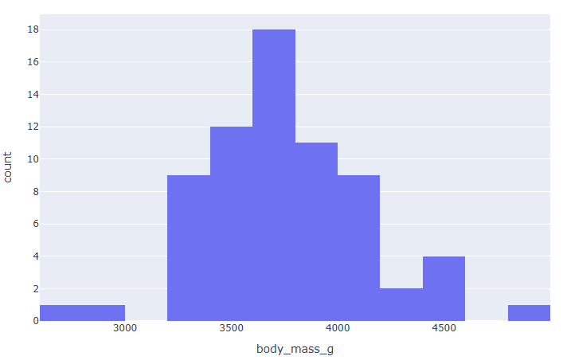
外れ値への対処方法¶
外れ値が特定できたら、次のいずれかの方法で処理する
データ（行）の削除
上限値と下限値の設定
データ（行）の削除¶
外れ値が何らかのエラーによるもの（異常値）と見なせる場合で、かつ、サンプルサイズが十分に大きい場合には、外れ値を含むデータ（行）を削除してもよい
表のように、非常に大きいか小さい身長の値は、「データ記録時に0を1つ多くまたは少なく入力してしまった」など何らかのエラーが発生したと考えられる
原因が明らかである場合には、値そのものを修正することも対処方法の1つ
そもそもこのような外れ値が多い場合には、データそのものの品質が低く、データ分析や機械学習モデル構築に適していない可能性が高いので、あらためてデータの取得、入手から始めるほうが安全である
成人の身長の表 (入力エラーが疑われる例)
| id | 身長 |
|---|---|
| 1 | 140 |
| 2 | 1700 |
| 3 | 180 |
| 4 | 19 |
| … | … |
上限値と下限値の設定¶
2σ範囲のしきい値か分位点より大きいか小さい値を外れ値と見なせる場合、その外れ値をしきい値か分位点の値で置き換えることも、外れ値に対する有効な対処方法である
たとえば、speciesのclip()メソッドを使って、先ほどのChinstrapの体重の外れ値を2σ範囲のしきい値で置き換える。引数lowerに下限値、引数upperに上限値を渡す
# 種類ごとに個体番号を振る
# cumcount() は、グループごとに「何番目のデータか」を数える pandas の関数
df_penguins["individual"] = df_penguins.groupby("species").cumcount() + 1
df_chinstrap = df_penguins.loc[df_penguins.loc[:, "species"] == "Chinstrap", :]
sigma = df_chinstrap.loc[:, "body_mass_g"].std() # 標準偏差
avg = df_chinstrap.loc[:, "body_mass_g"].mean() # 平均
print(f"下限値：{avg - 2 * sigma} 上限値：{avg + 2 * sigma}")
df_chinstrap = df_chinstrap.assign(
body_mass_g_clipped=df_chinstrap.loc[:, "body_mass_g"].clip(
lower=avg - 2 * sigma,
upper=avg + 2 * sigma,
)
)
px.histogram(
df_chinstrap.melt(
id_vars="individual",
value_vars=["body_mass_g", "body_mass_g_clipped"],
),
x="value",
facet_col="variable",
)
下限値：2964.418072519735 上限値：4501.7583980685
{kind=link}
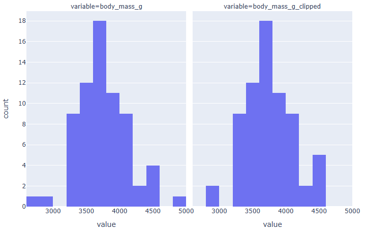
欠損値¶
実務上、何らか値の欠損があるデータを扱うことがある
欠損値のない入力データを前提としている機械学習モデルは多く、欠損値の取り扱いは最終的な分析結果やモデルに大きな影響を与える
とりうる手段を理解し適切に処理することが重要である
欠損値のデータ型の性質と、データの欠損値を把握して対処する方法について解説する
欠損値の基礎知識¶
データ型
pandasとNumPyで扱う場合のデータ型に応じて欠損値として扱われるデータは下記のとおり
| 表記 | データ型 | クラス |
|---|---|---|
| NaN | float型 | numpy.nan |
| NA | Int型 | pandas.NA |
| 欠損値のデータ型 |
※ pandas.NAクラスは、Experimentalという扱いであり、仕様が変わる可能性がある
欠損値の生成¶
欠損値（NaN）を含むfloat型のSeriesを生成
import numpy as np
import pandas as pd
rng = np.random.default_rng(1)
float_ser = pd.Series(rng.random(4), index=range(0, 8, 2)).reindex(range(4))
float_ser
| 0 | |
|---|---|
| 0 | 0.511822 |
| 1 | NaN |
| 2 | 0.950464 |
| 3 | NaN |
dtype: float64
int型のSeriesは、欠損値が含まれるとfloat型に型変換される
欠損値（NaT）を含むdatetime型のSeriesを生成
dt_ser = pd.Series(
pd.date_range("2023-01-01", periods=4),
index=range(0, 8, 2),
).reindex(range(4))
dt_ser
| 0 | |
|---|---|
| 0 | 2023-01-01 |
| 1 | NaT |
| 2 | 2023-01-02 |
| 3 | NaT |
dtype: datetime64[ns]
引数dtypeにpandas.Int64Dtypeを渡すことで、欠損値（NA）を含むint型のSeriesを生成
int_ser = pd.Series(
rng.integers(0, 10, 4),
index=range(0, 8, 2),
dtype=pd.Int64Dtype(),
).reindex(range(4))
int_ser
| 0 | |
|---|---|
| 0 | 2 |
| 1 | <NA> |
| 2 | 3 |
| 3 | <NA> |
dtype: Int64
データの型変換¶
pandasでは、int型およびbool型のデータに欠損値が含まれている場合は、自動的に型変換が行われる
| データ型 | 変換後のデータ型 |
|---|---|
| int型 | float型 |
| bool型 | object型 |
| float型 | float型 |
| object型 | object型 |
欠損値が含まれたデータの型変換
欠損値を含むデータの評価¶
NaNどうし、またはNaTどうしの比較演算は、Falseが返る
NAどうしの比較演算は、NAが返る
np.nan == np.nan # False
np.nan > np.nan # False
pd.NaT == pd.NaT # False
pd.NA == pd.NA # <NA>
欠損値を含むデータの演算¶
欠損値であるかどうかを確認するには、isna()またはisnull()関数（またはメソッド）を使う
pd.isna(float_ser)
# or
pd.isnull(float_ser)
# or
float_ser.isna()
# or
float_ser.isnull()
| 0 | |
|---|---|
| 0 | False |
| 1 | True |
| 2 | False |
| 3 | True |
dtype: bool
int_ser.isna()
| 0 | |
|---|---|
| 0 | False |
| 1 | True |
| 2 | False |
| 3 | True |
dtype: bool
dt_ser.isna()
| 0 | |
|---|---|
| 0 | False |
| 1 | True |
| 2 | False |
| 3 | True |
dtype: bool
欠損値を含むデータの演算¶
欠損値を含むSeriesに対して、記述統計を行うメソッドを実行した場合やグループ化した場合は、次のような処理になる
データを集計する場合、欠損値は0として扱われる
すべてのデータが欠損値の場合は0となる
累積演算（cumsum()、cumprod()など）では欠損値を無視する
int_ser.sum()
np.int64(5)
int_ser.cumsum()
| 0 | |
|---|---|
| 0 | 2 |
| 1 | <NA> |
| 2 | 5 |
| 3 | <NA> |
dtype: Int64
int_ser.sum(skipna=False)
<NA>
欠損値の発生パターン（メカニズム）と対処方法¶
実世界のデータに欠損値が生じるパターンと対処方法について解説する。
ここでは、欠損値の発生は、次の3パターンに分けられる
MCAR（Missing Completely At Random）：完全にランダムに発生する場合
ある列の欠損値の発生がほかの列の値によらない場合
欠損値が仮に欠損値ではなかった場合の分布がもともと欠損ではない値の分布と同じだと見なせる
つまり、この場合の欠損値は無視できる
MAR（Missing At Random）：条件はあるがランダムに発生する場合
ある条件下ではMCARである場合
その条件についてのみ考える場合には欠損を無視できるが、そうでない場合には無視できない
NMAR（Not Missing At Random）：ランダムには発生しない場合
系統的に欠損値が発生する場合、欠損値を無視できない。
実務上はMCARであることはあまりなく、MARまたはNMARであることが多い
欠損値の確認¶
例として、南極のペンギンに関するデータを使用する
df = pd.read_parquet("penguins.parquet")
print(df.isna().sum())
| species | 0 |
| island | 0 |
| bill_length_mm | 2 |
| bill_depth_mm | 2 |
| flipper_length_mm | 2 |
| body_mass_g | 2 |
| sex | 11 |
bill_length_mm、bill_depth_mm、flipper_length_mm、body_mass_gは2個ずつ、sexは11個の欠損値があることがわかる
欠損値の発生が完全にランダム（MCAR）な場合¶
MCARの場合には、欠損値を無視する、つまり欠損値を含む行を次の2つの方法で削除できる
ペアワイズ：対象とする列のいずれかに欠損がある行を削除
DataFrameのdropna()メソッドの引数subsetに列名をリストとして渡す
完全セット（リストワイズ）：対象としないものも含めて、いずれかの列に欠損がある行を削除
DataFrameのdropna()メソッドの引数subsetを指定しない（Noneを渡す）
欠損値の発生が何らかの原因による場合¶
MARやNMARの場合、欠損の発生が何らかの原因によるものと考えられるので、欠損値を補完することを解説する
単変量補完と多変量補完
単変量補完：単純に「その列だけ」で埋める（平均・中央値など）
多変量補完：他の列の情報も利用して「より妥当な値」を埋める。
単変量補完と多変量補完¶
単変量補完（univariate imputation）、欠損値補完（missing value imputation）の一種で「その変数だけの情報を使って欠損を埋める方法
代表的な手法
平均値補完：欠損をその列の平均値で埋める。
中央値補完：外れ値の影響を避けたいときに中央値を使う。
最頻値補完：カテゴリデータに多い方法で、一番よく出てくる値で埋める。
固定値補完：0や"Unknown"など、任意の一定値で埋める。
単変量補完と多変量補完¶
多変量補完（multivariate imputation）
欠損している変数を他の変数との関係を利用して補完する方法。単変量補完と違い、対象の列だけでなく、データセット全体の相関構造を考慮する点が特徴
代表的な手法
回帰補完
欠損した列を目的変数とみなし、他の変数から回帰モデルを作って推定値を補完。
（例：年収が欠損 → 年齢・学歴・職業から回帰して推定）
多重代入法（MICE: Multiple Imputation by Chained Equations）
複数の変数に欠損がある場合、連鎖的に1つずつ補完し、これを何回も繰り返して不確実性を反映させる。機械学習や統計解析でよく使われる。
機械学習を使った補完
ランダムフォレスト、k近傍法（kNN）、ベイズモデルなどを用いて欠損を推定。
行どうしに順序がある場合の補間¶
時系列データなど、欠損値のある行とその前後の行の値が何らかの関係性を持っていることを仮定できる場合、その関係性に基づいて欠損値を補間できる
欠損値を削除するよりも、合理的に多くのデータを分析やモデル構築に使える
ただし、欠損区間が長い場合は、最初にその原因を調査する
前後いずれかの行の値による補間
前の行の値による補間をforward fillingと呼ぶ
後ろの行の値による補間をbackward fillingと呼ぶ
線形補間
欠損区間において、値の変化が単調であることを前提とする
欠損が1か所の場合は、前後の行の値の平均値と同等
線形補間以外にも多項式補間など、さまざまな手法がある
📝 練習問題¶
「記述統計（データの代表値やばらつき）」や「ピボットテーブル」「相関関係の読み解き方」を練習します。
練習問題 1: 平均値の「甘い罠」と中央値の重要性（理論）¶
あなたが店長を務めるカフェで、ある日の「お客様10人の購入金額」を調べたところ、以下のようになりました。
[350円, 400円, 380円, 450円, 300円, 420円, 390円, 360円, 410円, 200,000円（超高額の絵画を購入した大富豪）]
この10人のデータの「平均値」を計算すると、実態（普段の客単価）とかけ離れた非常に高い金額になってしまいます。その理由を説明してください。
このような極端な値（外れ値）に影響されず、普段の「一般的なお客様の購入感覚」を正しく表すために、平均値の代わりに使うべき「代表値（統計指標）」は何でしょうか？
👉 練習問題 1 の解答と解説を見る
平均値が跳ね上がる理由: 平均値は「全員の合計金額を人数で割る」という計算をするため、1件だけ混ざっている
200,000円という「外れ値（極端に巨大な値）」に強く引っ張られてしまい、全員が数万円使ったかのような不自然な結果になるから。代わりに使うべき代表値: 「中央値（メディアン：Median）」
解説:
中央値は、データを小さい順（または大きい順）に並べ替えたときに、ちょうど真ん中にくる値（この場合は 390円 と 400円 の間付近）を指します。
どれほど大きな外れ値が1件混ざっていても、真ん中の順位の値はほとんど変わらないため、「普段の一般的なお客様の姿」を実態に即して捉えることができます。ニュースでよく見る「平均年収」と「中央値の年収」に大きなズレがあるのも、全く同じ理由（一部の超富裕層が平均値を引き上げているため）です。
練習問題 2: 標準偏差（データのばらつき）の直感的理解（理論）¶
ここに、1日の売上合計がどちらも「ぴったり30万円」である2つの店舗（A店、B店）があります。 それぞれの店の「お客様1人あたりの購入金額」のばらつき方を調べたところ、以下のような特徴がありました。
A店：来店する全員が、ほぼ全員「300円〜400円」のコーヒーとパンを均等に買っていく。
B店：100円のガム1個だけを買う人もいれば、1回で2万円分のコーヒー豆をまとめ買いする人もいる。
A店とB店の購入金額データの「標準偏差（Standard Deviation）」を比較したとき、数値がより大きくなるのはどちらの店舗でしょうか？
「標準偏差が小さい（ゼロに近い）」とは、データがどのような状態であることを意味するか、説明してください。
👉 練習問題 2 の解答と解説を見る
標準偏差が大きくなる店舗：B店
標準偏差が小さい（ゼロに近い）意味：「データ全体のばらつき（個人差）が小さく、全員の値が平均値のすぐ近くにギュッと集まっている状態」。
解説:
標準偏差（std）とは、数式を排して直感的に言うと、「全員のデータが、平均値から平均してどれくらい離れているか（平均的な距離）」を表す指標です。
A店は全員が平均（約350円）のすぐ近くにいるため、平均からの距離が短く、標準偏差は非常に小さくなります。
B店は平均値からもの凄く離れた人（100円の人や2万円の人）が多いため、平均からの距離が長くなり、標準偏差の数値は大きくなります。
練習問題 3: pivot_table を使ってクロス集計表を作ろう（コード）¶
カフェの複数店舗における、曜日別の売上履歴データ df_cafe があります。
Pandasの pd.pivot_table() を使い、「縦軸（行）に『店舗名』、横軸（列）に『曜日』、集計する値に『売上金額』の【合計（sum）】」を配置した、マトリクス表（クロス集計表）を作成するコードを完成させてください。
import pandas as pd
df_cafe = pd.DataFrame({
"店舗名": ["江古田店", "江古田店", "白山店", "白山店", "江古田店"],
"曜日": ["土曜", "日曜", "土曜", "日曜", "土曜"],
"売上金額": [450, 600, 500, 800, 750]
})
# TODO: pd.pivot_table を使って、縦=店舗名、横=曜日、値=売上金額の合計(sum)を集計してください。
# ※値がないセルは0で埋めるオプション fill_value=0 も追加しましょう。
pivot_df = pd.pivot_table(
df_cafe,
values= ,
index= ,
columns= ,
aggfunc= ,
fill_value=0
)
display(pivot_df)
👉 練習問題 3 の解答と解説を見る
pivot_df = pd.pivot_table(
df_cafe,
values="売上金額",
index="店舗名",
columns="曜日",
aggfunc="sum",
fill_value=0
)
解説:
valuesには「集計したい数値の列（売上金額）」を指定します。indexには「縦軸に並べたいグループ名（店舗名）」、columnsには「横軸に並べたいグループ名（曜日）」を指定します。aggfunc="sum"（集計関数）を指定することで、各グループに該当する売上金額を「足し算（合計）」してくれます（他には"mean"で平均を出すこともできます）。
練習問題 4: 相関係数 \(r\) の読み取り（理論）¶
2つのデータ（変数）の関係性を表す「相関係数（Correlation Coefficient: \(r\)）」を計算したところ、それぞれ以下のような数値になりました。これらが表す「データの関係性（相関）」の説明として最も適切な組み合わせを選んでください。
「その日の最高気温」と「かき氷の売上」の相関係数：\(r = 0.85\)
「その日の最高気温」と「ホットコーヒーの売上」の相関係数：\(r = -0.78\)
「お会計の金額」と「お客様の生まれ月」の相関係数：\(r = 0.02\)
【選択肢】
(ア) 強い負の相関（一方が増えると、もう一方は減る関係）
(イ) ほぼ無相関（お互いに関係がない）
(ウ) 強い正の相関（一方が増えると、もう一方も増える関係）
👉 練習問題 4 の解答と解説を見る
最高気温と「かき氷の売上」(\(r = 0.85\)) ➡ (ウ) 強い正の相関
最高気温と「ホットコーヒー」(\(r = -0.78\)) ➡ (ア) 強い負の相関
会計金額と「生まれ月」(\(r = 0.02\)) ➡ (イ) ほぼ無相関
解説:
相関係数 \(r\) は、必ず -1.0 から +1.0 の間の数値になります。
+1に近づくほど「右上がりの点々（正の相関）」、-1に近づくほど「右下がりの点々（負の相関）」になります。
0の近く（おおむね -0.2 〜 +0.2 の間）は「バラバラの丸い点々」になり、2つのデータには関係がない（無相関）と判断できます。生まれ月によってカフェで使う金額が変わるわけはないので、見事に 0 に近い無相関になっていますね。
練習問題 5: 「相関関係」と「因果関係」は違う！（データリテラシー）¶
ある新聞に、以下のようなデータ分析結果に基づいた記事が掲載されていました。
「調査の結果、地域ごとの『交番の数』と『犯罪発生件数』の間には、\(r = 0.82\) という非常に強い正の相関関係があることが分かった。したがって、街の犯罪を減らすためには、交番をすべて撤去して無くしてしまえばよい。」
この主張には、データ分析者として見過ごすことのできない致命的な誤りがあります。 「相関関係」と「因果関係」という言葉の違い、および「第3の要因（潜んでいる本当の変数）」に触れながら、この記事のロジックのどこがおかしいのか説明してください。
👉 練習問題 5 の解答と解説を見る
この記事は、2つのデータに「相関関係（連動して動く関係）」があるからといって、勝手に「因果関係（原因と結果の関係：交番があるから、犯罪が起きる）」があると決めつけてしまっている点が誤り。
裏に潜んでいる本当の第3の要因は「その地域の人口（あるいは都会度）」である。
「人口が多い地域（都会）」ほど、当然たくさんの交番が設置されますし、同時に人が多いため犯罪件数も多くなります。
交番を撤去したところで人口が減るわけではないため、犯罪は減るどころか治安が悪化して増える可能性が高く、この記事の「交番を無くせば犯罪が減る」という結論は、データ分析の致命的な誤読（擬似相関）である。
解説:
データサイエンスを学ぶ上で、最も重要なモラルがこの 「相関関係 ＝ 因果関係 ではない」 という鉄則です。
数字が連動して動いている（相関がある）からといって、安易に「原因と結果（因果）」だと判断せず、「裏に何か別の要因（人口など）が隠れていないか？」と疑いを持つことが大切です。
💻 演習課題（難易度別：5問）¶
データ解析を使って、カフェの顧客・営業データを分析してみます
（準備）演習で使うダミーの営業データフレームを作成します。
# このセルを最初に実行してください。
import pandas as pd
import numpy as np
np.random.seed(42)
df_analytics = pd.DataFrame({
"顧客名": ["山田", "佐藤", "鈴木", "高橋", "田中", "渡辺", "伊藤", "中村", "小林", "加藤"],
"性別": ["女性", "男性", "女性", "男性", "女性", "女性", "男性", "女性", "男性", "女性"],
"滞在時間（分）": [45, 60, 30, 180, 50, 40, 55, 35, 180, 48], # 4番目と9番目が長時間の勉強学生(外れ値)
"注文商品": ["コーヒー", "ケーキ", "コーヒー", "コーヒー", "ケーキ", "紅茶", "ケーキ", "コーヒー", "ケーキ", "コーヒー"],
"最高気温（℃）": [18, 22, 15, 28, 20, 16, 21, 14, 25, 19],
"支払金額（円）": [450, 950, 400, 450, 900, 400, 950, 400, 900, 450]
})
print("分析対象のカフェ顧客営業データ:")
display(df_analytics)
演習1: 平均値と中央値の比較、標準偏差の計算（難易度：易）
# カフェのお客様の「滞在時間（分）」列には、勉強で長時間居座った一部のお客様（180分）という外れ値が含まれています。
# TODO: 1. 「滞在時間（分）」列の 平均値(`.mean()`) と 中央値(`.median()`) を算出して表示し、比較してください。
# TODO: 2. 「滞在時間（分）」列の 標準偏差(`.std()`) を算出して表示してください。
# TODO: 平均値、中央値、標準偏差を計算して print する
stay_mean =
stay_median =
stay_std =
print(f"滞在時間の平均値: {stay_mean:.1f} 分")
print(f"滞在時間の中央値: {stay_median:.1f} 分")
print(f"滞在時間の標準偏差(ばらつき): {stay_std:.1f}")
演習2: crosstab を用いた属性掛け合わせクロス集計（難易度：易）
# 「性別」と「注文商品」の組み合わせから、どの性別の人が何を注文しやすいのか、度数（人数）を集計したいです。
# TODO: pd.crosstab() を使い、「性別」を行（縦軸）、「注文商品」を列（横軸）に指定したクロス集計表を作成してください。
# TODO: クロス集計を実行
cross_gender_item =
print("--- 性別 ✕ 注文商品のクロス集計 ---")
display(cross_gender_item)
#演習3: pivot_table による複数グループの平均支払金額集計（難易度：中）
# 各「注文商品」と「性別」の掛け合わせにおいて、1回あたりの「平均支払金額」がいくらになっているかをマトリクスで出したいです。
# TODO: pd.pivot_table() を使い、縦軸(index)に「注文商品」、横軸(columns)に「性別」、
# 集計する値(values)に「支払金額（円）」、集計関数(aggfunc)に平均「"mean"」を指定したピボットテーブルを作成してください。
# TODO: ピボットテーブルを実行
pivot_price = pd.pivot_table(
df_analytics,
values= ,
index= ,
columns= ,
aggfunc=
)
print("--- 注文商品 ✕ 性別 の平均支払金額ピボット表 ---")
display(pivot_price)
演習4: corr() による相関係数の算出（相関行列）（難易度：中）
# データフレーム内の数値列（「滞在時間（分）」「最高気温（℃）」「支払金額（円）」）の間の関係性を一瞬で調べたいです。
# TODO: データフレームの .corr() メソッドを使い、相関行列を算出してください。
# ※注意：数値以外の文字列（性別など）が含まれているため、引数に `numeric_only=True` を指定するのを忘れないでください。
# TODO: 相関行列を計算して表示する
correlation_result =
print("--- 数値データの相関行列 ---")
display(correlation_result)
演習5: 実践！Matplotlibを用いた「最高気温」と「支払金額」の関係性の可視化（難易度：難）
相関分析を目で見て直感的に確かめるため、散布図を描画します。
日本語表示用にインストールします
!pip install -q japanize-matplotlib
# TODO: plt.scatter() を使い、X軸に「最高気温（℃）」、Y軸に「支払金額（円）」を指定して散布図を描画してください。
# TODO: グラフのタイトルを「最高気温と支払金額の相関関係」に設定してください（日本語文字化け対策モジュールは導入済みです）。
import matplotlib.pyplot as plt
import japanize_matplotlib # 日本語表示用
# グラフキャンバスの用意
plt.figure(figsize=(6, 4))
# TODO: 1. 散布図を描画（X軸: 最高気温(℃), Y軸: 支払金額(円)）
plt.scatter(
)
# TODO: 2. グラフタイトルをつける
plt.title(
)
# 軸ラベルの設定
plt.xlabel("最高気温（℃）")
plt.ylabel("支払金額（円）")
plt.grid(True, linestyle=":")
# 画面に表示
plt.show()
# グラフを見て、「気温が高いほど支払金額が多い（あるいは少ない、関係がない）」のどれに該当するか確認してみましょう！
💡 演習問題の解答例と解説¶
👉 解答例を見る（ここをクリックして展開）
演習1の解答¶
stay_mean = df_analytics["滞在時間（分）"].mean()
stay_median = df_analytics["滞在時間（分）"].median()
stay_std = df_analytics["滞在時間（分）"].std()
解説: 平均値（約64.3分）が、一部の居座り学生（180分）によって大きく引き上げられているのに対し、中央値（49.0分）は実態に則した値を捉えています。標準偏差が55.1分と非常に大きく、滞在時間の個人差（ばらつき）が極めて激しいことが分かります。
演習2の解答¶
cross_gender_item = pd.crosstab(df_analytics["性別"], df_analytics["注文商品"])
演習3の解答¶
pivot_price = pd.pivot_table(
df_analytics,
values="支払金額（円）",
index="注文商品",
columns="性別",
aggfunc="mean"
)
演習4の解答¶
correlation_result = df_analytics.corr(numeric_only=True)
解説: 相関行列を見ると、「最高気温（℃）」と「支払金額（円）」の相関係数は 0.75 になり、非常に強い正の相関（気温が高い日ほど、高額な商品（ケーキセットなど）が売れ、売上が高くなる関係）が隠されていることが科学的に証明されました！
演習5の解答¶
plt.scatter(df_analytics["最高気温（℃）"], df_analytics["支払金額（円）"], color="coral")
plt.title("最高気温と支払金額の相関関係")
解説: 描画された散布図は「右上がり（正の相関）」の点々になっています。気温が高くなるにつれて支払金額が綺麗に上昇していく様子が、目の前のビジュアルとして美しく証明されました。これこそがデータ分析（可視化と解析の連動）の醍醐味です！
📚 まとめ¶
平均値の罠と中央値: 極端な外れ値が混ざるデータは、平均値が嘘をつきます。真ん中の順位の値である「中央値（median）」を併用するのが鉄則です。
標準偏差 (std): データが平均値から平均してどれくらい離れているかを示す、データの「ばらつき（個人差）」の指標。
クロス集計 (crosstab) と ピボット表 (pivot_table): カテゴリデータを多角的に掛け合わせて人数や金額の合計・平均を可視化する最強の集計ツール。
相関係数 (r): -1.0から+1.0の範囲で、2つのデータがどれくらい連動しているかを測る。
相関と因果の混同禁止: 「数字が連動している（相関）」からといって、そこに「直接の原因と結果（因果）」があるとは限らない。裏に潜む「第三の要因」を疑うことが大切。
定性的評価」と定量的評価: データ評価には2つのアプローチがある。